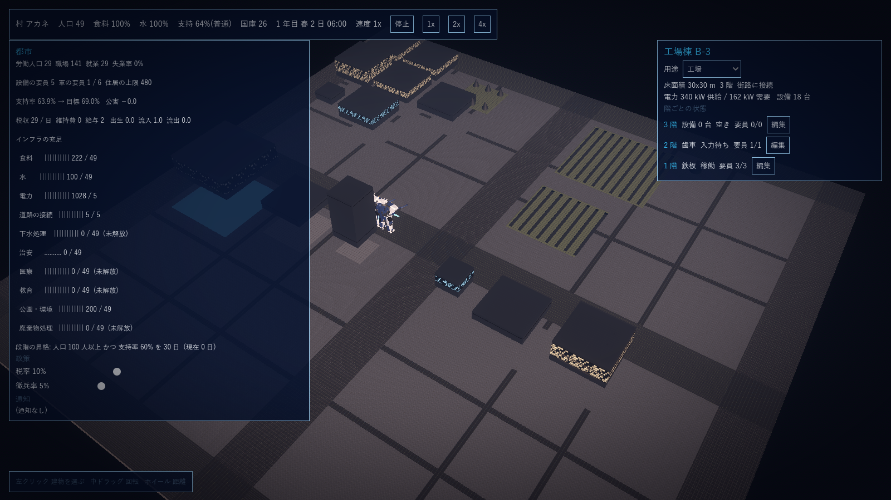
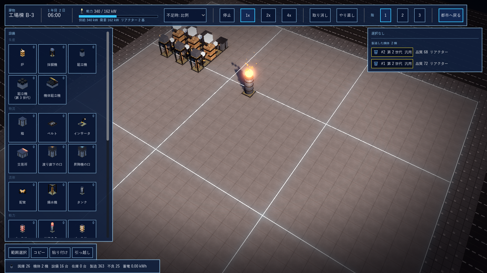
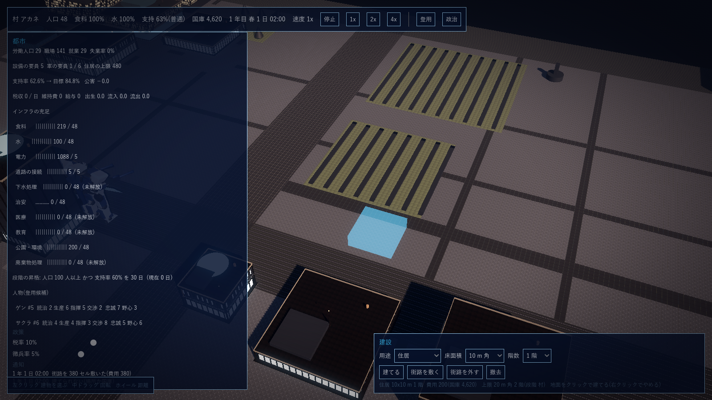
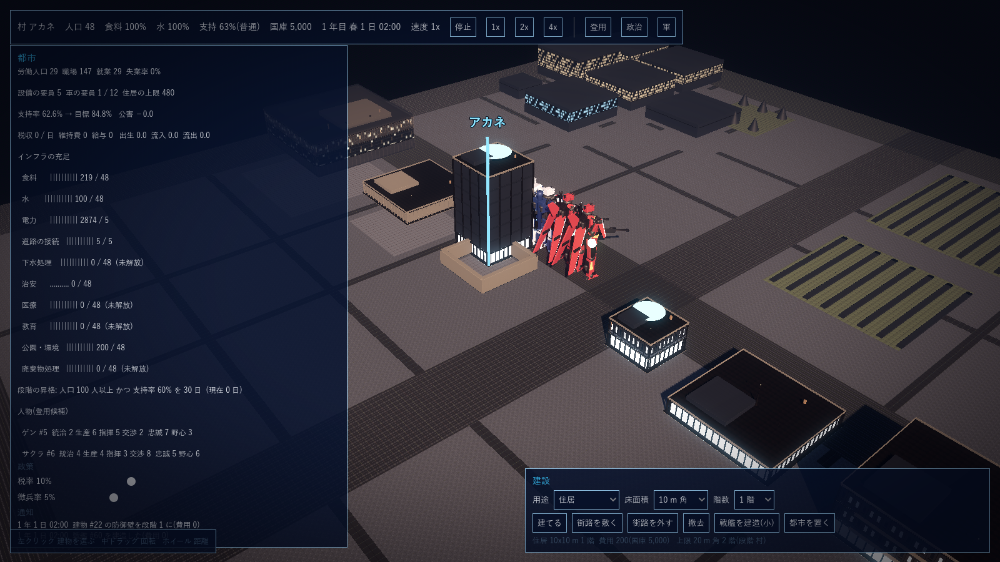

G17 都市(人口・雇用・税): 設計案と決定事項
2026-10-15 作成、同日回答で #1〜#14 を確定(「大体それでいい」。#14 は、含めない項目(登用・派閥・外交・公害の描画・道路の自動敷設)を後で足せる前提で構造を作ること)。正典(G1 の柱・確定要件、G3 の構想と「手順 4 に食料・水のインフラと人物の発生を含める」、G4 の成長段階、G12 #7 のインフラ 9 種、G5 のメイン画面)に沿う。第 3 節(支持率の低下で変わるもの)も同日確定。
1. 位置づけ
都市は、人(労働力・兵員・人物)と支持率を工場・軍・政治へ供給する系統。工場(G12・G13)と軍(G16)が既に動いているので、都市はその二つへ「人」を渡し、二つから「雇用」と「徴兵」を受け取って支持率に返す。構想図(G3)の 都市 → 工場(労働者)、都市 → 軍(徴兵)、都市 → 政治(税・支持率)、農地・水源 → 都市(食料・水)の 4 本の流れを作る。
2. 着手前の決定事項(2026-10-15 確定)
| # | 項目 | 決定 | 根拠・備考 |
|---|---|---|---|
| 1 | 時間の刻み | 都市の計算(人口・食料・水・インフラ・雇用・税・支持率)はゲーム内 1 時間(18,000 ティック)ごとに 1 回更新する。工場と戦闘は毎ティックのまま。人口の増減と段階の判定は 1 日ごと、人物の発生は 1 か月(30 日)ごと | G3 第 2 節「都市と政治はゲーム内 1 時間ごと、外交は 1 日ごと。ループは一つ」 |
| 2 | 人口の単位 | 住民は個人を持たず、都市ごとの集計(人数、労働人口の割合、技能レベル 0〜10 の分布)で持つ。設備の要員(Worker)は割り当てたときに集計から引き当てて名前と技能を生成し、外したときに集計へ戻す。個人として持つのは人物(登用候補)だけ | G4 の人口は数十人から数十万人。軍の Unit と同じく集計で全段階を同じ式にする。現在の Worker(Id、名前、技能)はそのまま使える |
| 3 | 住居と人口の上限 | 住居は建物の用途の一つ。収容人数 = 床面積 × 階数 × 係数(10x10 の 1 階で 10 人、係数は json)。人口の上限 = 住居の収容人数の合計 × 住居の前提インフラ(水・電力・下水・道路)の充足率。上限を超えた分は流出する | G4 段階 1「井戸と畑、住居」、G12 #7 の requiredForHousing |
| 4 | 人口の増減 | 1 日ごとに、自然増(人口 × 出生率 × 医療の充足)と流入(支持率が閾値を超え、空き住居と空き職場があるとき)と流出(食料・水の不足、支持率の低下、住居不足)を足し引きする。飢えと渇きは死亡ではなく流出で表す(人が死ぬ表現は入れない) | G4「食料と水の確保が最優先」。数値は json |
| 5 | 食料と水の扱い | SimCity 式の「供給能力(人数分 / 時)と需要(人口)の比較」にし、アイテムとしては流さない。畑と井戸(揚水機)は都市の供給設備で、床面積(畑)や台数(井戸)で供給能力が決まる。工場で使う水アイテム(冷却)は別で、今のまま | 軽量(G1 第 1 節)。食料を品質付きアイテムで 7,000 台の設備に流す必要はない |
| 6 | インフラ 9 種の効き方 | 各インフラは「供給能力(人数分)」を持つ建物・設備で供給し、需要は人口。充足率 = 供給 / 需要(上限 1)。住居の前提 4 種(水・電力・下水・道路)は人口の上限(#3)に掛かる。残り 5 種は係数: 廃棄物 → 支持率(溜まると減点)、治安 → 支持率と派閥(手順 4.5)、医療 → 出生率と要員の稼働率、教育 → 技能レベルの分布(上位が増える)、公園 → 支持率の加点と公害の相殺。電力の需要は 人口 × kW で、都市の建物(住居など)はリアクターのある建物から供給される(工場の供給と同じ台帳)。道路の接続は、建物が街路に接しているかの判定(地図) | G12 #7-1〜7-9 の「本作での意味」をそのまま式にする |
| 7 | 雇用と失業 | 労働人口 = 人口 × 労働率(json)。職場 = 工場設備の要員枠(人)の合計 + 軍の要員枠(#8)+ 都市の供給設備の要員枠。就業者 = 埋まっている枠。失業率 = 1 − 就業 / 労働人口。製造ロボットが要員を置き換えると枠が減り失業が増える(G3 の「労働の代替」)。失業率は支持率の減点 | G1「工場と軍人の雇用バランスが政治の争点」 |
| 8 | 軍の人員と徴兵 | 人間は戦闘しない(G16 確定)が、隊には要員(整備・運用)が要る: 機体 1 機あたり n 人(json。既定 3)。徴兵は「軍の要員枠を埋める」ことで、都市の労働人口から引く。要員が足りない隊は出撃できない(または稼働率が下がる)。徴兵の割合はプレイヤーの政策(税率と同じ扱い)で、高いと支持率が下がる | G3 構想図の「徴兵」、G4「第 2〜3 世代が兵役に就き、人の徴兵を減らせる」を、人間の戦闘なしで成立させる解釈 |
| 9 | 税と国庫 | 税収 = 就業者 × 所得(json)× 税率(政策 0〜50%)を 1 日ごとに国庫(既存の Treasury)へ入れる。支出 = インフラの維持費(建物ごと、段階 3 以降に効く)+ 軍の給与(要員 × 単価)。国庫が負になると支持率が下がり、維持費が払えないインフラは充足率が落ちる | G4 段階 3「インフラの維持費が効いてくる」、交易の国庫と一本化 |
| 10 | 支持率 | 0〜100。1 時間ごとに目標値を計算し、現在値を目標へ 1 日で 1/4 ずつ近づける(急変しない)。目標値 = 基準 50 + 食料・水の充足(±)+ 失業率(−)+ 税率(−)+ 徴兵率(−)+ 治安(±)+ 公園(+)− 廃棄物 − 公害(工場の稼働台数に比例)。係数は全て json | G1「人口と支持率で段階が進む」、G4 段階 2「支持率が税と徴兵に反応する」 |
| 11 | 段階の昇格 | G4 の 4 段階。昇格条件 = 人口の下限(村→町 100 人、町→都市 1,000 人、都市→国家 10,000 人。json)と 支持率 60% 以上が 30 日続くこと。昇格で建物の最大床面積(G4)と技術レベルの上限(G12 #15)が上がる。降格はしない(人口が減っても段階は保つ) | G4「段階は人口と支持率で進む」 |
| 12 | 人物の発生 | 1 か月ごとに市民から候補が 1〜3 人現れる。能力(統治・生産・指揮・交渉。各 1〜10)と忠誠・野心(各 1〜10)を持ち、教育の充足率が高いほど能力の上限が上がる。この手順では「発生と一覧」まで。登用・役職・派閥は手順 4.5(登用と政治) | G3 第 2 節の人物、第 3 節「手順 4 に人物の発生を含める」 |
| 13 | 都市の地図(マクロ)での建物 | 建物に「用途」を持たせる: 工場(今のまま)、住居、畑、井戸、市場、学校、診療所、警察、公園、下水処理、廃棄物処理。用途ごとの収容・供給能力は床面積と階数から出す(json)。全て 10 m 単位の正方形で、既存の Building(床面積・階)の上に用途を足す。用途が住居以外の建物の中にも設備(工場)は置ける(用途は人の受け入れ、設備は物の処理で独立) | G1 確定「建物と街区の大きさ」。階モジュール(G9)の見た目は用途ごとに選ぶ |
| 14 | 第 1 段階の範囲 | 計算(GPS.Sim): 都市の台帳(人口・労働・技能分布)、住居と用途、食料と水、インフラ 9 種の充足、雇用と失業、軍の要員と徴兵、税と国庫、支持率、段階の昇格、人物の発生。命令: 建物の用途の設定、税率と徴兵率、見本の都市の生成。検証は xunit と、Godot の都市の画面(G5 のマクロ: 上の帯に人口・食料・水・支持率・日時、建物を選ぶと右に概要、「編集」でその階のミクロへ切り替え)。含めない: 登用と役職(手順 4.5)、派閥、外交、公害の描画、道路の自動敷設 | G5「建物の編集(マクロからミクロへ)」のモックを実装に含める |
3. 支持率の低下で変わるもの(2026-10-15 要望、同日回答で確定)
支持率 0〜100 を 5 つの帯に分け、帯ごとに効果を固定する(数値は json)。効果は「人口・労働・軍・国庫・人物・敗北」の 6 系統で、どれも既存の計算(都市の台帳、設備の要員、隊の要員、Treasury、人物)に係数として掛かる。帯の境界では急変せず、#10 のとおり現在値が目標へ 1 日で 1/4 ずつ近づくので、効果も徐々に変わる。
| # | 帯 | 効果(確定) | 根拠・備考 |
|---|---|---|---|
| 15 | 高い(70 以上) | 流入が増える(流入率 × 1.5)。人物の候補の忠誠が高く出る(+2)。昇格条件(#11)の対象 | G1「人口と支持率で段階が進む」 |
| 16 | 普通(50〜69) | 何も変わらない(基準) | |
| 17 | 低い(30〜49) | 流入が止まり、毎日 人口の 0.5% が流出する。徴兵の充足率が下がる(徴兵の枠の埋まり率 × 0.7 = 徴兵拒否)。設備の要員が離職する(毎日 要員の 1% が外れ、集計へ戻る)。税収が減る(× 0.8)。人物の忠誠が毎月 −1 | G4「支持率が税と徴兵に反応する」 |
| 18 | 危険(10〜29) | #17 を強める(流出 2% / 日、徴兵 × 0.3、離職 5% / 日、税収 × 0.5、忠誠 −2 / 月)。治安の需要が 2 倍になる(暴動。治安が足りないと生産効率が 7 割に落ちる: 工場の設備の加工速度と都市の供給設備の供給能力 × 0.7。2026-10-15 回答)。隊は要員の離脱で出撃できなくなることがある(要員の充足率 < 1 の隊は出撃不可、#8)。登用した人物の離反(派閥)は手順 4.5 で、ここでは忠誠の低下まで | G12 #7-6「治安が低いと派閥と離反が増える」、G7 |
| 19 | 失脚(10 未満) | 10 未満が 30 日続くと失脚で敗北(ゲームオーバー)。30 日の猶予の間は #18 の効果に加えて、国庫からの支出(維持費・給与)が止められない(緊縮不可) | G3「敗北は征服か、支持率の低下による失脚」。外交への波及(2026-10-15 要望・検討事項): 支持率が低いと AI 国家の侵攻の確率が上がり、外交で不利な条件の提示(通商の打ち切り・割譲の要求など)が増える。手順 5 後半(外交)の決定事項に入れる |
| 20 | 支持率を上げる手段(操作側) | 税率・徴兵率を下げる、食料・水・インフラの充足を上げる、公園を建てる、廃棄物処理を建てる、治安を上げる、失業を減らす(工場・軍の要員枠を増やす、製造ロボットの比率を下げる)。即効の手段(配給・減税の布告)は手順 4.5 の政策として入れ、ここでは入れない | G3 の「人型ロボットを労働と兵役にどう配分するか」が争点になるよう、ロボット比率が失業を通じて効く |
4. 第 1 段階の実装記録(2026-10-15 完了)
#1〜#20 を sim/GPS.Sim/City.cs に実装し、xunit 50 件(既存 41 + 都市 9)が全て通る。数値は game/data/city.json で調整する。含めない項目(登用・派閥・外交・公害の描画・道路の自動敷設)は、人物の一覧・忠誠・治安の充足・公害の値・道路接続の判定として足場だけ入れてある(#14 の前提)。
| 区分 | 内容 | ファイル |
|---|---|---|
| 台帳 | 都市(City): 人口(集計)・支持率と目標・段階・税率・徴兵率・人物の一覧と、1 時間ごとの集計(労働人口・職場・就業・失業率・設備の要員・軍の要員と徴兵・住居の上限・公害・暴動・帯・インフラ 11 種の供給 / 需要 / 充足)。保存に含まれ、読み込み後は次の時間の境界で再計算される | City.cs(City、Supply、Person) |
| 刻み | 工場と戦闘の後、1 時間の境界で Hour(集計と支持率)、1 日の境界で Day(人口・税と支出・離職・昇格・失脚)、30 日ごとに人物。ティック 0 は集計だけ | Simulation.cs、CitySim.Tick |
| 建物の用途 | Building.Use(factory / residence / farm / well / market / school / clinic / police / park / sewage / waste)。供給能力 = 床面積 × 階数(maxFloors まで)× perCell。用途の要員は優先順(井戸 → 畑 → 警察 → 診療所 → 下水 → 廃棄物 → 学校 → 市場)に労働人口の残りで埋め、埋まった割合だけ供給する | City.cs(Hour)、city.json(uses) |
| 雇用 | 労働人口 = 人口 × 0.6。設備の要員(人間)→ 徴兵(隊の機体 × 3 人 × 徴兵率 × 帯の係数)→ 用途の要員 の順に使い、残りが失業。要員の雇用(HireStaff)は労働人口の範囲内で、名前と技能(教育の充足で上がる)は都市が決める。AssignStaff も同じ上限 | City.cs、Commands.cs |
| 軍の要員 | 隊は Id の順に徴兵の人数を充て、埋まっていない隊は出撃できない(Deploy が no_crew の通知を出す) | CitySim.CanDeploy、Combat.cs(Deploy) |
| 食料・水・インフラ | 充足率 = min(1, 供給 / 需要)。段階で未解放のインフラ(下水 L2・医療 L2・教育 L2・廃棄物 L3)は 1 として扱う。食料・水は段階を問わない。電力は全建物の(リアクター供給 − 需要)の余剰、道路は住居の外周 6 m 以内に街路のブロックがあるか(sim.World を見る)。住居の上限 = 住居の収容 × 前提 4 種(水・電力・下水・道路)の最小の充足率 | City.cs(Hour、RefreshRoads)、infrastructure.json(techLevel) |
| 支持率 | 目標 = 50 + 食料(余剰 1.5 倍まで加点 / 不足で減点)+ 水(同)− 失業率 × 40 − 税率 × 80 − 徴兵率 × 60 + (治安 − 1)× 10 + 公園 × 10 − (1 − 廃棄物)× 10 − 公害(設備 1 台 0.002、上限 15)− 国庫が負なら 10。現在値は毎時 1.04%(1 日で約 1/4)目標へ近づく | city.json(support) |
| 帯の効果 | #15〜#19 のとおり(流入 / 流出 / 徴兵の係数 / 離職 / 税収の係数 / 忠誠 / 候補の忠誠 / 治安の需要 2 倍)。暴動(危険の帯で治安不足)は Factory.EfficiencyPct = 70 で、機械の加工速度と供給設備の供給能力に掛かる。失脚は 10 未満が 30 日で Defeated と defeat の通知 | city.json(bands)、Factory.cs(StepMachine) |
| 人口・税・段階 | 1 日ごとに 出生(× 医療)+ 流入(帯の係数、空き住居と空き職場の範囲)− 流出(帯 + 飢え・渇き + 住居超過)。税収 = 就業 × 10 × 税率 × 帯の係数、維持費(段階 3 から、用途の建物 1 セル 0.2 / 日)、給与(徴兵 × 2)を国庫(Treasury)に通す。昇格は 人口(100 / 1,000 / 10,000)かつ支持率 60% が 30 日続いたとき | City.cs(Day) |
| 人物 | 30 日ごとに 1〜3 人。能力は 1〜(5 + 5 × 教育の充足)、忠誠は帯で補正、野心は 1〜10。低い帯で毎月忠誠が下がる。登用は手順 4.5 | City.cs(Person) |
| 命令 | FoundCity、SetBuildingUse、SetTaxRate、SetConscriptionRate、HireStaff(全て保存と再生の対象)。見本の村は SampleCity(2x2 街区、住居 5・畑 2・井戸・公園・市場・診療所・学校・警察・下水・工場棟・工房・格納庫と隊、街区内の小路) | City.cs、SampleCity.cs |
5. 都市の画面(Godot)
起動: godot --path game res://scenes/city.tscn ++ [--hours N] [--select id] [--open id] [--screenshot path]。上の帯に 段階・都市名・人口・食料・水・支持率(帯)・国庫・日時・速度。左の板に 雇用・要員・支持率の目標・税と支出・人口の増減・インフラ 10 種の充足(未解放を明記)・昇格の条件・人物(登用候補)・政策(税率と徴兵率のスライダ)・通知。建物を左クリックで選ぶと右の板に 用途(プルダウンで変更)・床面積と階数・街路の接続・供給能力と要員、工場なら電力と階ごとの状態(レシピ・稼働・要員)と各階の「編集」、所属する隊。「編集」で同じ sim の建物を MicroEditor で開き(上の帯に「都市へ戻る」)、戻ると都市の画面に戻る。

都市の画面: 村 アカネ の 30 時間後。人口 49、食料と水は充足、支持率は 64% から目標 69% へ。右は工場棟 B-3(3 階、1 階 鉄板 稼働、2 階 歯車 入力待ち)。

同じ sim の工場棟 B-3 の 1 階を「編集」で開いた状態。上の帯の右端に「都市へ戻る」。設備の要員は都市の労働人口から引き当てた人(名前 #1000〜)。
6. 残る粗(第 1 段階の外)
| 項目 | 状態 |
|---|---|
| 登用と役職・派閥(手順 4.5) | 人物の発生と忠誠まで。登用の画面(G6)と役職の効果は次 |
| 外交への波及(#19) | 手順 5 後半の決定事項に入れる(侵攻の確率・不利な条件の提示) |
| 建物の新設と道路の敷設(都市の画面) | 実装済み(第 7 節、2026-10-16) |
| 公害の描画・住民の描画 | 値だけ。見た目は後 |
| 電力の都市への配電 | 全建物の余剰の合計を都市の電力とする近似。送電の経路は持たない |
7. 建物の新設・撤去と街路の敷設(2026-10-16 追加)
都市の画面で建物を建て、街路を敷き、撤去できる。実装時の決定(数値は city.json の build): 費用 = 床面積(セル) × 階数 × 用途の単価(国庫から。工場 3・住居 2・畑 0.5・井戸 5・市場 / 学校 / 診療所 / 警察 3・公園 0.5・下水 / 廃棄物 4)。床面積は 10 m 単位の正方形で段階の上限まで(G4: 村 20 / 町 30 / 都市 50 / 国家 100 m 角)、階数の上限も段階ごと(2 / 4 / 8 / 12)。他の建物や街路の上には建てられない。撤去は費用の半分が戻る(拠点・隊の格納庫・勢力の拠点は撤去不可)。街路は幅 4 m の帯を 2 点で敷き、1 セル 1(建物の下は飛ばす)。建設は即時(工期は後)。xunit 71 件(建設 2 件を追加)。
| 区分 | 内容 | ファイル |
|---|---|---|
| 命令 | BuildBuilding(用途・位置・床面積・階数。Id は自動)、Demolish(建物)、BuildRoad(2 点・幅・外す)。置けない理由は CheckSite が返す(用途・大きさ・階数・地図の外・重なり・街路の上)。工場の用途は鉱脈の土台(Ground)付き。建てた直後に道路の接続を再判定 | Construction.cs |
| 街路 | 地形のブロック(Asphalt)を sim.World に置く。都市の計算の道路接続(住居の外周 6 m 以内)がそのまま効く。Godot は Dirty なチャンクだけ再構築 | Construction.cs(BuildRoad)、TerrainRenderer.BuildDirty |
| 画面 | 右下の「建設」の板: 用途・床面積(段階の上限まで)・階数を選び、「建てる」で地面に半透明の枠(置ければ水色、置けなければ赤)が付いて回り、クリックで建てる。「街路を敷く」「街路を外す」は 2 点をクリック、「撤去」は建物をクリック。右クリックでやめる。建物の見た目は 1 棟ごとの子ノードにまとめ、撤去で消す。通知に費用と結果 | CityScreen.Build.cs、CityScreen.cs(AddBuildingVisual) |

街路を 380 セル敷いた直後(費用 380、通知に記録)。右下の建設の板で住居 10 m 角 1 階(費用 200、国庫 4,620)を選び、置ける位置に水色の枠が出ている。
8. 複数都市と割譲(2026-10-16 追加)
G4 段階 3「複数の都市」と段階 4「食料・水・電力を国全体で融通する」。これまでの「都市」の台帳(City)は国の台帳とし、その下に都市(Settlement)を複数持つ。xunit 87 件(複数都市 3 件を追加)。
| 区分 | 内容 | ファイル |
|---|---|---|
| 都市(Settlement) | 名前・中心の位置・人口・住居の上限・食料と水の充足・建物の数。建物は最寄りの中心の都市に属する。国の人口は都市の合計(代入は比例配分)。国庫・段階・政策・人物・派閥・外交は国で共有 | City.cs(Settlement、City.Population、SettlementOf) |
| 都市ごとの計算 | 1 時間ごとに都市ごとの住居・食料・水・道路の充足と住居の上限(水・電力・下水・道路の前提は都市の値)。段階 3 までは融通しない(国の食料・水の充足は都市の人口加重平均で、支持率に効く)。段階 4(国家)で食料・水を国全体で融通する。1 日ごとの出生・流入(空き住居は都市、空き職場は国)・流出(帯・その都市の食料と水の不足・住居超過)は都市ごと | CitySim.Hour、Day |
| 命令 | FoundCity に中心の位置を追加(最初の都市)。FoundSettlement(名前・位置・初期人口)は段階 3 から(創造モードは制限なし)。都市の画面の建設の板「都市を置く」で地面をクリック。中心には名札と細い柱の印 | City.cs、CityScreen.Build.cs |
| 割譲(G20 #6 の「割譲は後」) | 優勢な和平(相手から貢納)で相手の人口が 50 以上なら、相手の人口の 3 割が「○○ からの割譲地」として相手の拠点の隣の新しい都市になり、相手の蓄えの 3 割が拠点の荷下ろし場に入る | Diplomacy.cs(MakePeace) |

都市の中心(拠点の格納庫)の名札と柱。建設の板に「都市を置く」。左の板は都市が 2 つ以上か都市の段階から、都市ごとの人口・上限・食料・水を列挙する。